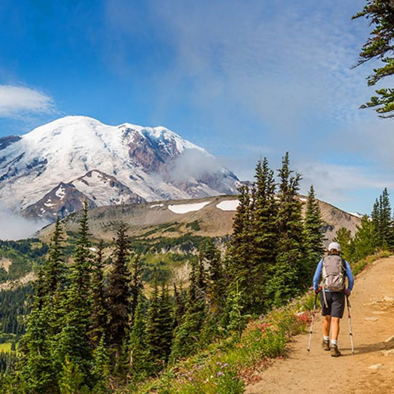
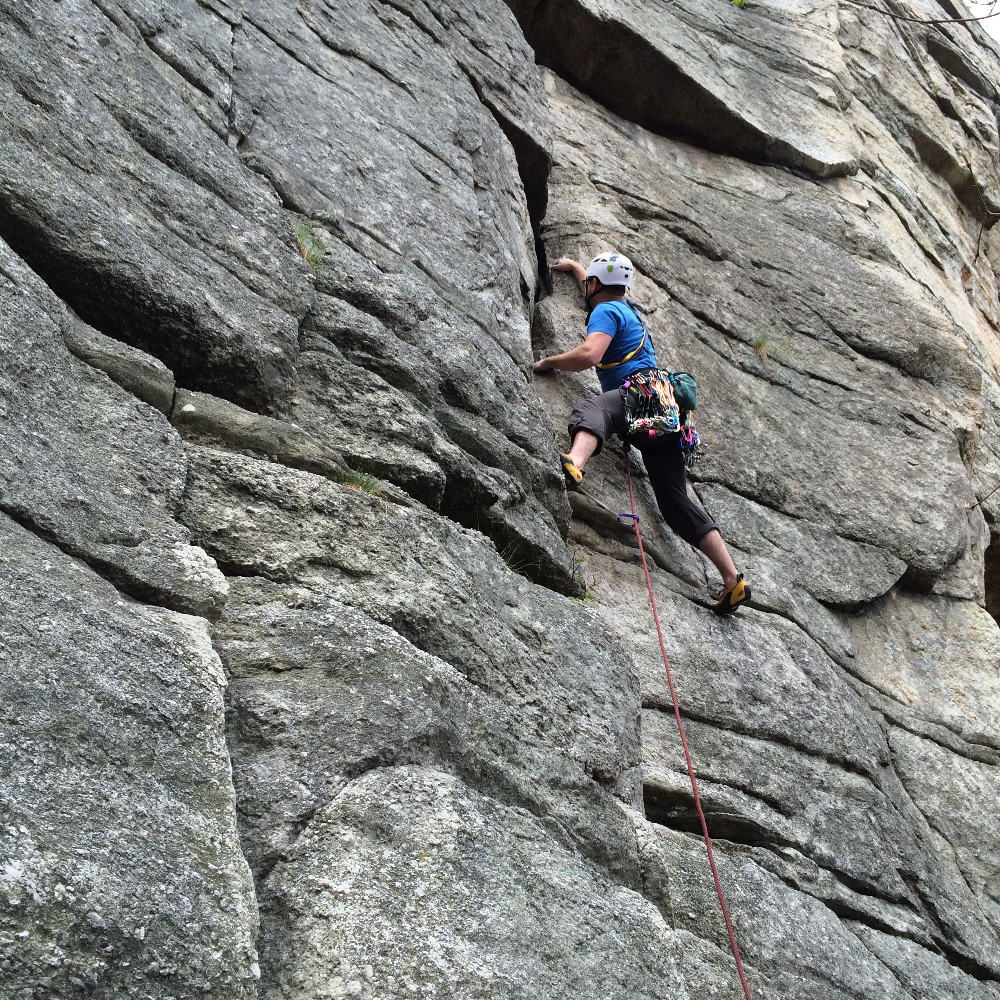
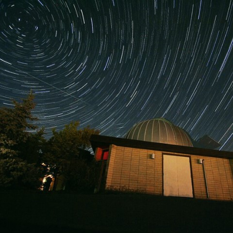
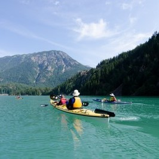
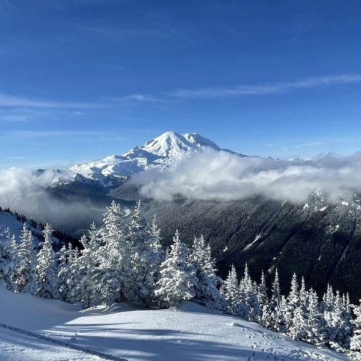
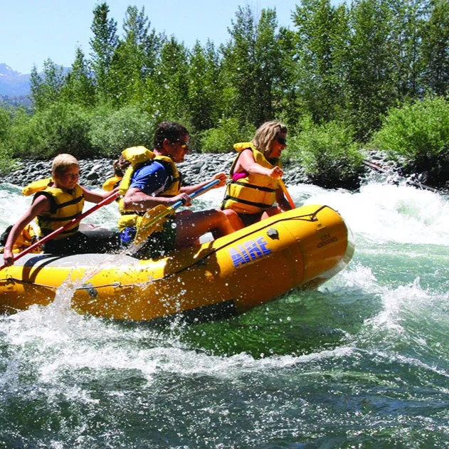
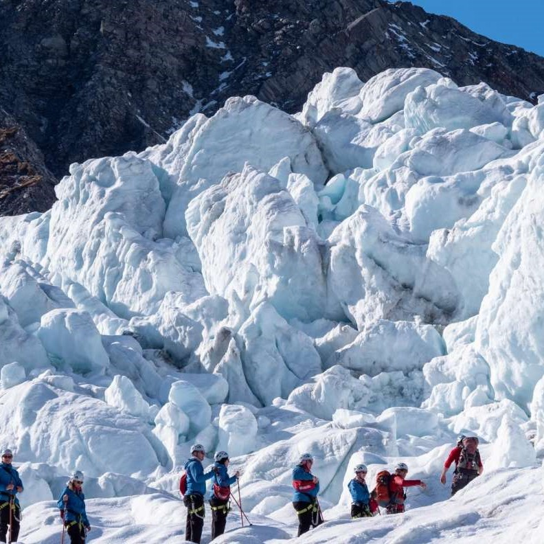
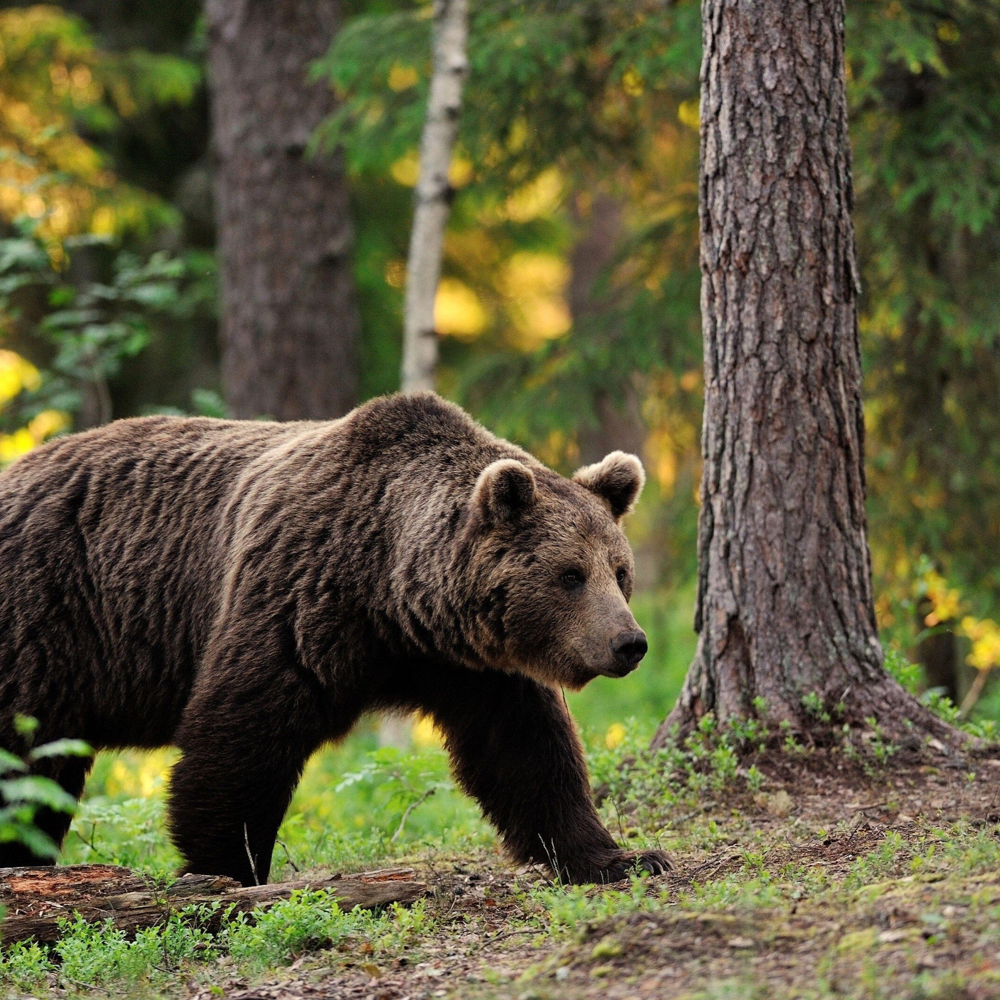
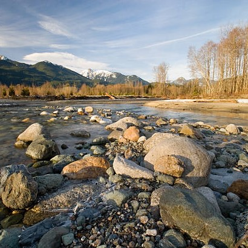

Washington National Parks
Inicio
Contacto
Actividades
Senderismo en el Monte Rainier
Escalada en roca en Leavenworth
Observatorio Astronómico Goldendale
Kayak en el lago Diablo
Esquí en Crystal Mountain
Rafting en el río Wenatchee
Excursión al glaciar Coleman
Observación de animales en el Parque Nacional North Cascades
Pesca en el río Skagit
Nuestros parques nacionales
North Cascades National Park
Olympic National Park
Mount Rainier National Park
Nuestros parques historicos
Klondike Gold Rush
Lewis and Clark National Historical Park
Manhattan Project National Historical Park
San Juan Island National Historical Park
Nez Perce National Historical Park
Mapa de Washington

Senderismo en el Monte Rainier

Escalada en roca en Leavenworth

Observatorio Astronómico Goldendale

Kayak en el lago Diablo

Esquí en Crystal Mountain

Rafting en el río Wenatchee

Excursión al glaciar Coleman

Observación de animales en el Parque Nacional North Cascades

Pesca en el río Skagit
Jorge Sanchez Rodriguez
jorgesnchz@correo.ugr.es
+34 644 322 189